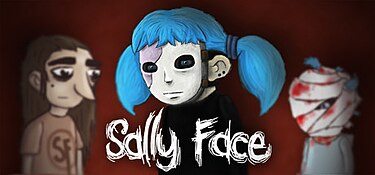
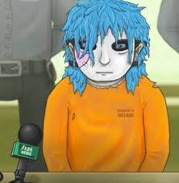
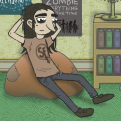
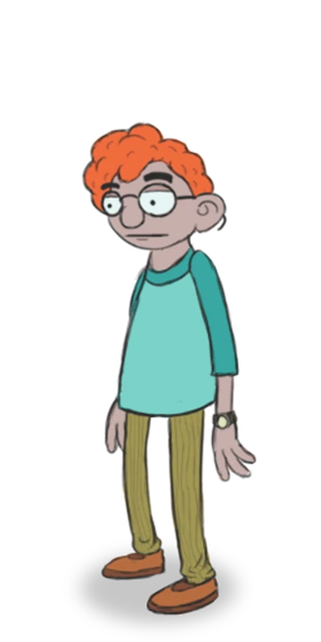
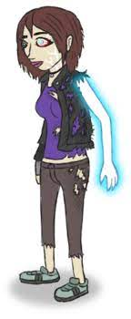

гра "Sally Face"

в цій грі є 5 епізодів
епізод 1 "дивні сусіди"
Сал Фішер – 15-ти річний підліток, який переїжджає до Апартементів Едіссона у місті Нокфелл з Нью-Джерсі з своїм батьком. З діалогів у грі, стає зрозуміло, що теоретичною причиною переїзду є смерть матері Саллі. Перед днем їхнього переїзду була жорстоко вбита їхня сусідка місіс Сандерсон. Саллі знайомиться з сусідами включно з Ларрі, який впевняє його у тому, що є свідком цього злочину. Під їхню підозру попадає Чарлі з 204 квартири. Саллі з допомогою Ларрі находить докази до цієї теорії і Чарлі заарештовують.
епізод 2 "Нещастя"
Через кілька місяців Ларрі каже Салу, що відчуває, що його прокляв демон через вчинок у його дитинстві. Сал обіцяє йому допомогти і йде до Тодда Моррісона, сусіда їхнього віку, який удосконалює гаджети. Тодд модифікує "Gear Boy" Сала, щоб мати можливість виявляти паранормальні явища (привиди,демони), і вони втрьох досліджують апартаменти. На 5 поверсі, який знаходиться у стадії ремонту, Сал потрапляє в таємну кімнату, де стикається з демоном. Ларрі втручається, щоб врятувати Сала і знищує демона за допомогою гаджета, удосконаленого Тоддом.
"апатраменти Едісонна" це місце де живуть наші головні герої*
Епізод 3: "Ковбасний інцидент"
Більше ніж через рік Сал і його друзі вирішують дослідити причину дивного смаку ковбаси у їхній шкільній їдальні. Дізнавшись, що його виробляє вчителька математики місіс Пакертон, яка живе у апартаментах Еддісона, Сал, Ларрі і Еш вирішують проникнути в її квартиру. Тут вони виявляють, що ковбаса готується з людського м’яса. Їхня подруга Ешлі виявляє прихований сміттєпровід і падає в нього. Сал, Ларрі і Тодд виявляють, що він веде до культистського храму під будівлею. Потрапивши у храм, вони рятують подругу.
Епізод 4: "Суд"
П’ять років потому дорослий Сал живе з Тоддом у будинку по дорозі від Еддісон Апартментс, де вони провели останні роки, досліджуючи культ. Ешлі приходить у гості, і вони з Салом йдуть на побачення. Тієї ночі Сал отримує дивні повідомлення від Ларрі, після чого він поспішає до квартири і виявляє, що Ларрі вчинив самогубство. Саллі і привид Ларрі разом пробиваються крізь апартаменти, де в потойбічному світі показано, що всі мешканці поросли дивним виростом. Коли Сал добирається Терренса Еддісона, власника будівлі, який ніколи не виходить зі своєї кімнати, він виявляє, що Терренс з дитинства був одержимий зеленою масою. Сал перемагає масу, але Терренс каже йому, що він повинен вбити всіх заражених жильців апартаментів, щоб покінчити з цим назавжди. Неохоче Сал вбиває всіх мешканців. У вестибюлі він знаходить Тодда, який став одержимий дияволом. Прибула поліція, і Сал заарештовують.
Епізод 5: "Спогади і Мрії"
Після смерті Саллі, Ешлі продовжує Тоддові розслідування культу. Вона монтує вибухівку в головному культовому храмі, але не може змусити себе підірвати її. Віривши, що Саллі судилося знищити культ, вона починає ритуал, з метою воскресити Саллі, і жертвує собою, щоб стати фізичним господарем для його духу, тимчасово зберігаючи її життя і надаючи їй особливі здібності. Вони йдуть до храму, де Ешлі, дух Саллі і привид Ларрі перемагають «Нескінченного», основну сутність культу, рятуючи Тодда від одержимості.
Через два роки Сал став перед судом і, незважаючи на всі зусилля Ешлі, засуджений до смерті та страчений на електричному стільці як серійний вбивця.
головні герої:
Саллі Фішер – протагоніст, син Генрі та Діани Фішерів. З кожним епізодом Саллі розвивається як персонаж. Трагічний нещасний випадок у дитинстві призвів до смерті його матері та залишив на його обличчі серйозні шрами, через які він носить протез на обличчі. Через роки після цього інциденту Сал та його батько переїхали до міста Нокфелл, щоб почати все спочатку, проживаючи в номері 402 Апартаментів Еддісона.
Ларрі Джонсон – один із головних персонажів. Син Лізи та Джима, (у 4 епізоді - його вітчимом стає Генрі Фішер). Ларрі з'являється в першому епізоді як сюжетний персонаж після того, як Сал знайомиться з Лізою (матір Ларрі). Проживає під 1 поверхом у квартирі, яку віддали Лізі за те, як каже Ларрі, що вона тут працює.
Ларрі зухвала і самовпевнена, людина-авантюра. Спираючись на деякі сцени з гри, можна впевнено сказати, що він будь-якої хвилини готовий захистити своїх друзів, він безстрашний і вірний. Іноді вживає нецензурну лайку, що робить його образ дещо агресивним, але не злим та негативним.
Тодд Моррісон – сюжетний персонаж, син Рея та Яніс Моррісонів, кращий друг і однокласник Саллі, Ларрі і Ешлі. А також хлопець Ніла. В кінці 3 епізоду він з'являється в психлікарні через вплив червоноокого Демона.
Тодд невисокий хлопець, типовий ботанік. У нього бліда рожева шкіра і густі чорні брови, його волосся коротке, але дуже кучеряве і яскраво-рудого кольору, на носі у нього круглі окуляри. Одягнений він у болотяні штани в смужку і лікарняну сорочку, на ногах коричневі черевики, а на лівій руці годинник.
Дорослий Тодд більш неохайний і має помітну зайву вагу, на ногах у нього сандалії коричневого кольору, під якими одягнені білі шкарпетки, на ногах охідні бриджі болотного відтінку, волосся стало довшим і схожим на дреди, на обличчі є чорна, ледь помітна щетина.
В 5 епізоді він став худим і підтягнутим, замість щетини у нього з'явилася борода.
Невідомо нічого про минуле Тодда, але ми знайомимося з ним у 2 Епізоді де він показаний "відмінником" і людиною, яка добре знається на комп'ютерах.
Тодд зібраний і серйозний хлопець, до всіх речей він ставиться дуже серйозно та розважливо оцінює будь-яку ситуацію.
Ешлі Кемпбелл – одна з сюжетних персонажок. Вона найкраща подруга Саллі. Крім того, вона, як і Ларрі, бачила обличчя хлопця під протезом. Вона перший персонаж, який проживає не в апартаментах, а у місті. Друга протагоністка (5 епізод).
Ешлі красива дівчина середнього зросту з довгим каштановим волоссям, у неї зелені очі з довгими фарбованими віями і чорною підводкою. Шкіра дівчини світла, з одягу має довгий світшот фіолетового кольору, на шиї чорний чокер, коричневі легінси та аквамаринові кеди.
Після закінчення школи Еш обрізала волосся, щоб зручніше було кататися на мотоциклі, замість легінсів у неї рвані бриджі та чокер із маленькою монеткою на ньому, на руках у неї зелені байкерські рукавички, носить чорну шкірянку.
У Ешлі добрий характер, вона дуже дбайлива і турботлива персонажка, але незважаючи на це, у Еш є задатки прекрасної лідерки, вона рішуча та цілеспрямована.